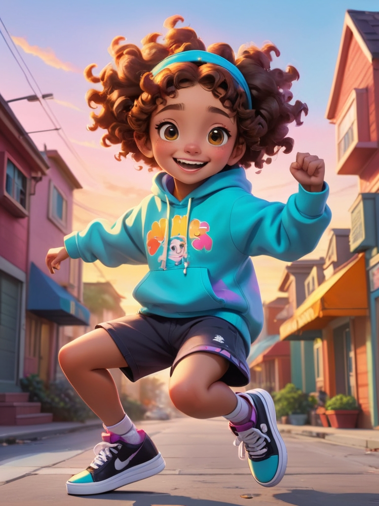

Scene 1: Mina's Adventure Begins
Mina is a cheerful little girl. Today, she puts on her favorite blue hat and gets ready to explore her backyard.
Scene 2: The Lost Kitten
She walks into the garden and finds a lost little kitten. The kitten looks a little scared, and Mina gently says, “Don’t worry, I’ll help you.”
Scene 3: Looking for the Kitten's Home
Mina carefully picks up the kitten and starts looking for its home. She asks every animal, “Have you seen this little kitten?”
Scene 4: Meeting the Rabbit
Mina meets a rabbit, and the rabbit points to a big tree, saying, “The kitten might be over there!” Mina walks towards that direction.
Scene 5: The Kitten's Home
Mina arrives at the big tree and finds the kitten’s home inside a tree hole. She happily tells the kitten, “You’re home!”
Scene 6: Helping the Kitten

The kitten jumps into the tree hole, wagging its tail in joy. It thanks Mina. Mina smiles and says, “Helping others makes me so happy!”
Scene 7: A Falling Bird

Mina continues to play in the garden, when suddenly, she hears a noise. It turns out that a little bird has fallen from the tree.
Scene 8: Helping the Bird
Mina gently puts the little bird back on the tree, saying, “Be careful, don’t fall again!” The little bird thanks her and happily flies back to the tree.
Scene 9: Peaceful Moments
Mina sits on a bench in the garden, listening to the sound of wind chimes, feeling very happy. She thinks today is really special.
Scene 10: Returning Home
As the sun sets, Mina returns home and tells her mom about her adventure today. She has learned the joy of helping others and understands the value of sharing happiness.